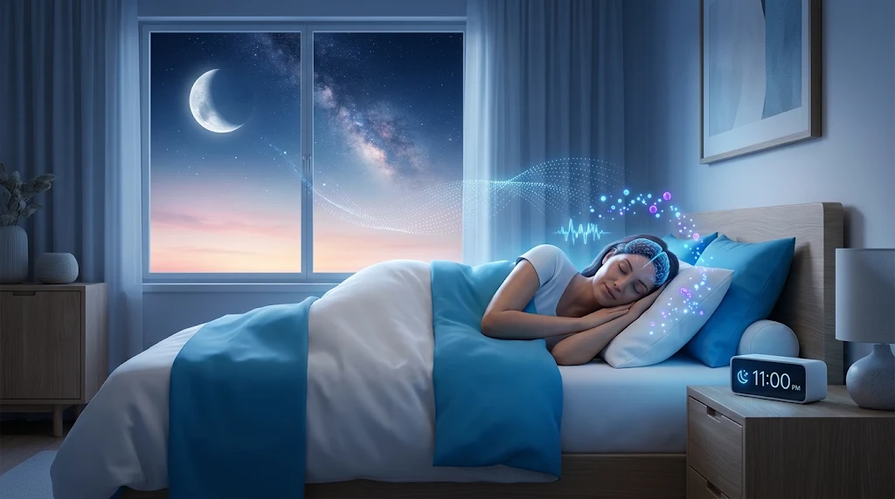

Sueño y hábitos saludables
¿Por qué es importante dormir bien?
Descubre cómo influye el sueño en tu salud física y mental, cuántas horas necesitas dormir y qué hábitos pueden ayudarte a descansar mejor.

En pocas palabras
- Dormir no es simplemente «apagar» el cuerpo: mientras duermes, el cerebro y el organismo realizan procesos importantes para recuperarse y prepararse para el día siguiente.
- La mayoría de los adultos necesita dormir entre 7 y 9 horas cada noche.
- Dormir poco de forma habitual se relaciona con un mayor riesgo de obesidad, diabetes, presión arterial alta, enfermedades cardiovasculares y depresión. También aumenta el riesgo de accidentes.
- Algunas personas no reconocen que están durmiendo poco, aunque su rendimiento y capacidad de concentración ya estén afectados.
- Mantener horarios regulares, dormir en un ambiente oscuro y tranquilo y reducir el uso de pantallas antes de acostarte puede ayudarte a descansar mejor.
¿Qué pasa en tu cuerpo mientras duermes?
Dormir no es un simple «apagado». Mientras duermes, tu cerebro procesa información y consolida recuerdos, mientras que el organismo realiza diferentes procesos relacionados con la recuperación y el mantenimiento de sus funciones.[1]
El sueño tiene dos fases principales: el sueño REM (del inglés rapid eye movement, o movimientos oculares rápidos) y el sueño no REM. Durante el sueño REM se producen movimientos rápidos de los ojos y suelen aparecer sueños más vívidos. El sueño no REM comprende varias etapas, desde el sueño ligero hasta el sueño profundo. Ambas fases se alternan varias veces durante la noche y son importantes para la salud.[5]
Dormir lo suficiente, mantener una buena calidad del sueño y respetar horarios adecuados ayuda a proteger la salud física y mental, la calidad de vida y la seguridad.[1]
¿Por qué es tan importante dormir bien?
Para el cerebro y el estado de ánimo
Mientras duermes, el cerebro organiza y consolida información, lo que ayuda a aprender y recordar. Una buena noche de sueño favorece la atención, la capacidad para resolver problemas, la toma de decisiones y la creatividad.[1]
Cuando duermes poco, puede resultar más difícil controlar las emociones y la conducta. La falta de sueño también se ha relacionado con problemas de salud mental, como la depresión, y con un mayor riesgo de conductas peligrosas.[1]
Si tienes el ánimo bajo de forma persistente o pensamientos de hacerte daño, busca ayuda profesional. No tienes que afrontar esa situación por tu cuenta.
Para el cuerpo
El sueño de buena calidad participa en diferentes funciones necesarias para mantener la salud física:[1]
- Cuida el corazón y los vasos sanguíneos: durante el sueño se producen cambios en la actividad cardiovascular. Dormir poco de forma habitual puede afectar la presión arterial y la salud del corazón.
- Participa en la regulación del apetito: la falta de sueño puede alterar las señales hormonales que intervienen en el hambre y la saciedad, lo que puede favorecer un mayor consumo de alimentos.
- Influye en el control del azúcar en la sangre: dormir poco puede afectar la forma en que el organismo utiliza la insulina y regula la glucosa, lo que se relaciona con un mayor riesgo de diabetes tipo 2.
- Favorece el crecimiento y la reparación de tejidos: durante el sueño profundo se libera hormona del crecimiento, que participa en el desarrollo y la reparación de células y tejidos.
- Apoya las defensas del organismo: dormir lo suficiente contribuye al funcionamiento del sistema inmunitario. La falta de sueño puede dificultar la respuesta del cuerpo frente a las infecciones.
Para el rendimiento y la seguridad
Dormir bien te permite funcionar mejor durante el día. Cuando no descansas lo suficiente, puedes tardar más en completar tus tareas, reaccionar con mayor lentitud y cometer más errores.[1]
Después de varias noches durmiendo menos de lo necesario, incluso si la pérdida es de solo una o dos horas por noche, tu capacidad para concentrarte y realizar actividades puede deteriorarse considerablemente.[1]
La somnolencia también puede provocar microsueños: episodios muy breves e involuntarios de sueño que ocurren mientras intentas permanecer despierto. Pueden durar apenas unos segundos y es posible que ni siquiera te des cuenta de que han ocurrido.[1]
Esto es especialmente peligroso al conducir, porque reduce la capacidad de reaccionar ante imprevistos y aumenta el riesgo de accidentes. La falta de sueño puede afectar la conducción de manera comparable a la intoxicación por alcohol.[1]
Si sientes sueño mientras conduces, detente en un lugar seguro. No intentes combatir la somnolencia únicamente abriendo las ventanas, subiendo el volumen de la música o tomando café.
¿Qué riesgos tiene dormir poco de forma habitual?
Un consenso de la Academia Americana de Medicina del Sueño (AASM) y la Sociedad de Investigación del Sueño señala que dormir menos de 7 horas por noche de manera regular se relaciona con efectos negativos para la salud.[2]
Entre los problemas asociados con la falta habitual de sueño se encuentran:
- Aumento de peso y obesidad.
- Diabetes tipo 2.
- Presión arterial alta.
- Enfermedades cardiovasculares y accidente cerebrovascular.
- Depresión y alteraciones del estado de ánimo.
- Mayor riesgo de accidentes y lesiones.
- Alteraciones de la respuesta inmunitaria.
- Disminución del rendimiento y de la capacidad de concentración.
También se ha observado una relación entre dormir poco y otros problemas, como mayor sensibilidad al dolor y dificultades para realizar actividades cotidianas.[2]
Es importante recordar que estas asociaciones no significan que dormir poco provoque inevitablemente todas estas enfermedades. El riesgo depende de diferentes factores, pero mantener un descanso adecuado es una parte importante del cuidado de la salud.
¿Cuántas horas hay que dormir?
Las necesidades de sueño cambian a lo largo de la vida. Como orientación general, el Instituto Nacional del Corazón, los Pulmones y la Sangre de Estados Unidos (NHLBI) recoge las siguientes recomendaciones:[3]
- Adultos de 18 años o más: entre 7 y 9 horas al día.
- Adolescentes de 13 a 18 años: entre 8 y 10 horas al día.
- Niños de 6 a 12 años: entre 9 y 12 horas al día.
- Niños de 3 a 5 años: entre 10 y 13 horas al día, incluidas las siestas.
- Niños de 1 a 2 años: entre 11 y 14 horas al día, incluidas las siestas.
En los adultos, el consenso de la AASM recomienda dormir 7 horas o más por noche de forma regular para favorecer una salud óptima.[2]
Dormir más de 9 horas no necesariamente es perjudicial. Puede ser normal en adultos jóvenes, personas que se recuperan de una falta de sueño acumulada o quienes atraviesan una enfermedad. Sin embargo, si necesitas dormir mucho más de lo habitual o sigues sintiéndote cansado, conviene consultar con un profesional de salud.[2]
Si durante los días libres duermes mucho más que entre semana, puede ser una señal de que no estás descansando lo suficiente durante los días de trabajo o estudio. Aunque dormir más ocasionalmente puede ayudarte a recuperarte, no sustituye un horario de sueño regular.[3]
¿Cómo saber si no estás durmiendo lo suficiente?
La falta de sueño puede hacer que te sientas cansado durante el día, que no despiertes descansado o que tengas dificultades para mantenerte alerta. También puede afectar tu trabajo, tus estudios, la conducción y tus relaciones sociales.[1]
Podrías no estar durmiendo lo suficiente si con frecuencia sientes que podrías quedarte dormido mientras:[1]
- Lees o ves televisión sentado.
- Estás sentado y quieto en un lugar público, como una reunión o una clase.
- Viajas como pasajero durante una hora sin hacer una parada.
- Conversas con alguien.
- Estás sentado en silencio después de almorzar.
- Esperas unos minutos en el tráfico.
También pueden aparecer dificultades para aprender, concentrarte, recordar información, tomar decisiones o controlar las emociones.[1]
¿Cómo se manifiesta en niños y adolescentes?
En los niños y adolescentes, la falta de sueño no siempre se manifiesta como cansancio o somnolencia. En ocasiones puede provocar:
- Inquietud o hiperactividad.
- Dificultades para prestar atención.
- Irritabilidad y cambios de humor.
- Tristeza o falta de motivación.
- Problemas de comportamiento y bajo rendimiento escolar.[1]
Además, algunas personas pueden acostumbrarse a dormir poco y creer que funcionan bien, aunque su atención y rendimiento ya estén afectados.[1]
Cómo dormir mejor: hábitos saludables
Lo primero es reservar suficiente tiempo para dormir. A veces, el descanso es una de las primeras actividades que sacrificamos cuando tenemos una agenda ocupada, pero debería formar parte de nuestra rutina de cuidado personal.
El NHLBI recomienda los siguientes hábitos para favorecer un sueño saludable:[4]
- Acuéstate y levántate a la misma hora todos los días. Mantener horarios regulares ayuda a establecer un ritmo de sueño. En los niños, también es útil fijar una hora para acostarse y una rutina previa.
- Procura mantener el mismo horario los fines de semana. Intenta que la diferencia entre los horarios de los días laborables y los días libres no sea mayor de una hora, aproximadamente.
- Dedica la hora previa a dormir a actividades tranquilas. Reduce las luces brillantes y evita las pantallas y los dispositivos electrónicos cerca de la hora de acostarte, porque pueden dificultar que concilies el sueño.
- Evita las comidas abundantes antes de acostarte. Si tienes hambre, puedes optar por un refrigerio ligero. También es recomendable evitar el alcohol antes de dormir, ya que puede alterar la calidad del descanso.
- Limita la cafeína y evita la nicotina. El café, el té, algunos refrescos y el chocolate contienen cafeína, un estimulante cuyos efectos pueden durar varias horas, incluso hasta 8 horas. La nicotina también puede interferir con el sueño.
- Pasa tiempo al aire libre y mantente activo durante el día. La actividad física regular puede favorecer el descanso nocturno.
- Mantén el dormitorio tranquilo, fresco y oscuro. Un ambiente cómodo puede facilitar que te duermas y permanezcas dormido.
- Prueba una rutina relajante antes de acostarte. Un baño caliente, la lectura o algunas técnicas de relajación pueden ayudarte a prepararte para dormir.
¿Es recomendable tomar siestas?
Una siesta breve puede mejorar temporalmente la alerta y el rendimiento durante el día. Sin embargo, si tienes dificultades para dormir por la noche, conviene que la siesta sea temprano por la tarde y que no dure más de 20 minutos.[4]
¿Qué hacer si trabajas por turnos?
Trabajar de noche o cambiar frecuentemente de horario puede dificultar el descanso porque el horario laboral entra en conflicto con el reloj biológico, que regula los ciclos de sueño y vigilia.
Algunas medidas que pueden ayudarte son:[4]
- Aprovechar las oportunidades para tomar siestas breves.
- Reservar suficiente tiempo para dormir después del turno.
- Evitar cambios de horario innecesarios, cuando sea posible.
- Limitar la cafeína al inicio del turno y evitarla cerca de la hora de dormir.
- Proteger el dormitorio de la luz y el ruido cuando duermas durante el día, por ejemplo, utilizando cortinas que bloqueen la luz.
¿Cuándo consultar al médico?
Los problemas de sueño pueden pasar desapercibidos durante una consulta médica si no los mencionas. Por eso, habla con un profesional de salud si con frecuencia tienes somnolencia durante el día, no despiertas descansado o tienes dificultades para adaptarte a un horario de trabajo por turnos.[6]
También conviene consultar si:[6]
- Roncas fuerte y con frecuencia, o alguien ha observado que dejas de respirar mientras duermes.
- Te despiertas con sensación de ahogo o falta de aire. Estos síntomas pueden ser señales de apnea del sueño, un trastorno en el que la respiración se interrumpe repetidamente durante la noche.
- Te quedas dormido o tienes dificultades para mantenerte despierto durante actividades rutinarias, especialmente al conducir.
- Tienes problemas para dormir de forma frecuente y desde hace tiempo.
- A pesar de dormir suficientes horas, continúas sintiéndote cansado durante el día.
¿Cómo prepararte para la consulta?
Antes de acudir al médico, puede ayudarte llevar un diario de sueño durante algunas semanas. Anota:
- A qué hora te acuestas y a qué hora te despiertas.
- Cuánto tiempo crees que tardas en dormirte.
- Cuántas veces te despiertas durante la noche.
- Si tomas siestas y cuánto duran.
- Cómo te sientes durante el día.
- Si consumes café, alcohol u otras sustancias que puedan afectar el sueño.
Según los síntomas y la valoración médica, puede ser necesario realizar un estudio del sueño llamado polisomnografía. Es una prueba que registra distintas funciones del organismo mientras duermes, como la actividad cerebral, la respiración, el ritmo cardíaco y los niveles de oxígeno.[6]
El tratamiento depende del problema identificado. Por ejemplo, en la apnea del sueño se utilizan medidas y tratamientos específicos para evitar que las vías respiratorias se obstruyan durante el descanso.[6]
No tomes pastillas para dormir por tu cuenta. Algunos medicamentos pueden producir efectos adversos, generar dependencia o empeorar determinados trastornos del sueño. Consulta primero con un profesional de salud.
Palabras que quizás escuches
- Sueño REM: fase del sueño caracterizada por movimientos rápidos de los ojos y una intensa actividad cerebral. En esta etapa suelen aparecer sueños más vívidos.
- Microsueño: episodio muy breve e involuntario de sueño que ocurre cuando intentas permanecer despierto.
- Apnea del sueño: trastorno en el que la respiración se interrumpe repetidamente o disminuye durante el sueño.
- Polisomnografía: estudio que registra diferentes funciones del organismo mientras duermes para ayudar a diagnosticar trastornos del sueño.
- Reloj biológico: sistema interno que regula los ritmos del organismo, incluidos los momentos en que sentimos sueño y estamos despiertos.
Aviso: este artículo tiene fines informativos y no sustituye la valoración de un profesional de salud. No aborda en detalle los trastornos específicos del sueño ni las necesidades de sueño de los lactantes.
Referencias científicas
- National Heart, Lung, and Blood Institute. Sleep Deprivation and Deficiency: How Sleep Affects Your Health [Internet]. Bethesda (MD): National Institutes of Health; 2022 [consultado el 8 de noviembre de 2026]. Disponible en inglés. Ver documento original.
- Watson NF, Badr MS, Belenky G, et al. Recommended amount of sleep for a healthy adult: a joint consensus statement of the American Academy of Sleep Medicine and Sleep Research Society. Sleep. 2015;38(6):843-844. doi:10.5665/sleep.4716. Ver documento original.
- National Heart, Lung, and Blood Institute. Sleep Deprivation and Deficiency: How Much Sleep Is Enough [Internet]. Bethesda (MD): National Institutes of Health [consultado el 8 de noviembre de 2026]. Disponible en inglés. Ver documento original.
- National Heart, Lung, and Blood Institute. Sleep Deprivation and Deficiency: Healthy Sleep Habits [Internet]. Bethesda (MD): National Institutes of Health; 2022 [consultado el 8 de noviembre de 2026]. Disponible en inglés. Ver documento original.
- Eunice Kennedy Shriver National Institute of Child Health and Human Development. Sleep [Internet]. Bethesda (MD): National Institutes of Health [consultado el 8 de noviembre de 2026]. Disponible en inglés. Ver documento original.
- National Heart, Lung, and Blood Institute. Sleep Deprivation and Deficiency: Diagnosis [Internet]. Bethesda (MD): National Institutes of Health; 2026 [consultado el 8 de noviembre de 2026]. Disponible en inglés. Ver documento original.